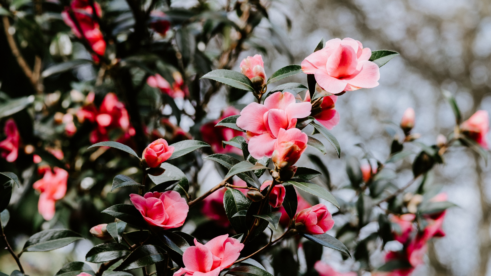
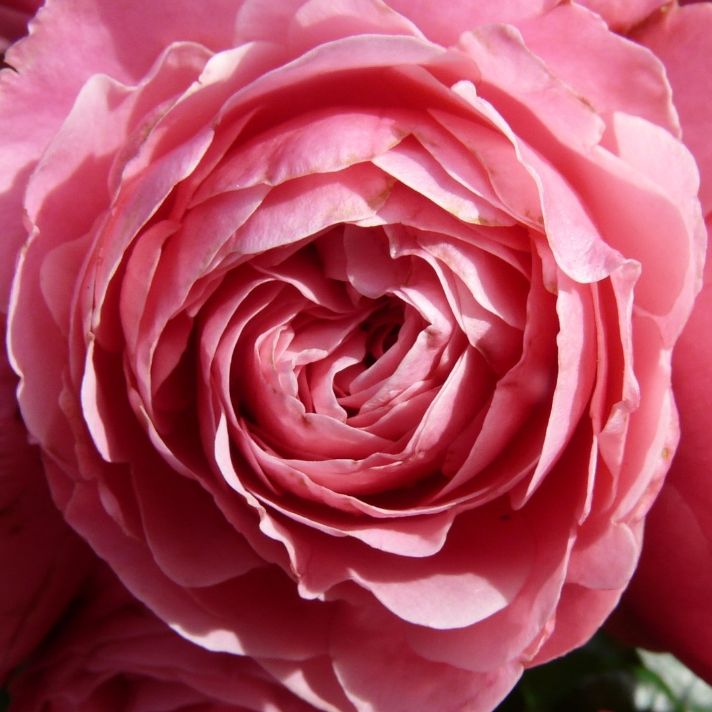
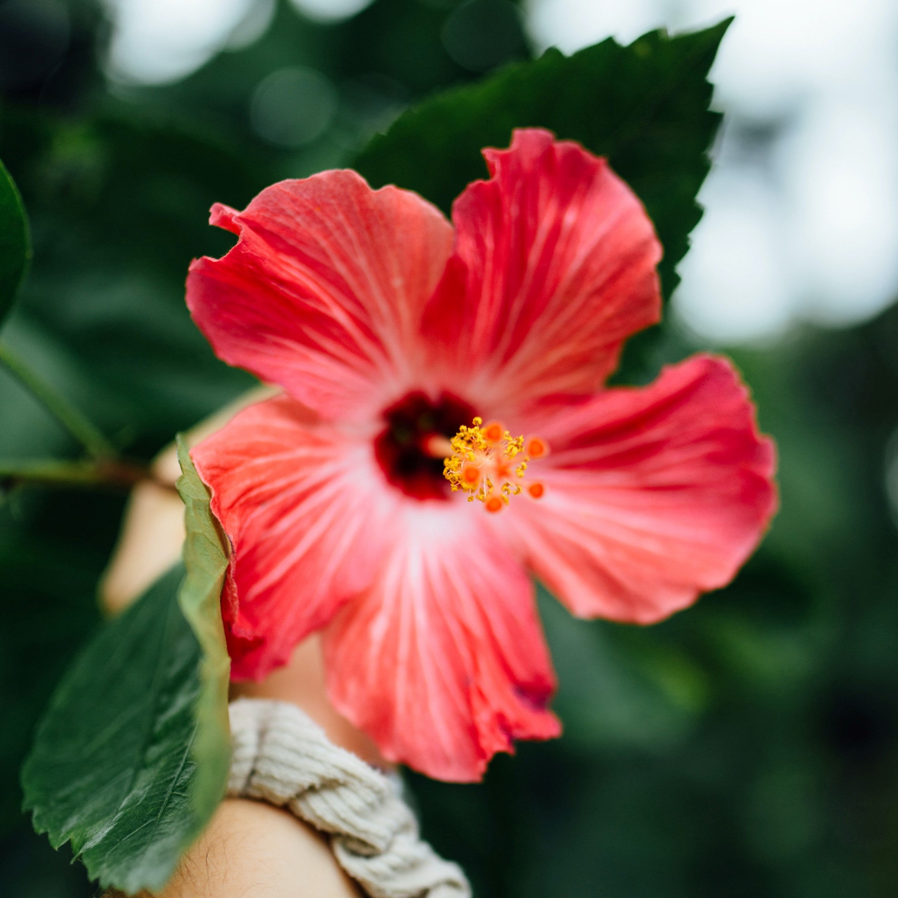

alexmasterblack
info
gallery
Ошибка!
×
Упс, что-то пошло не так...
something else
tasks
svg
формулы
Главная
Информация

Розa
Лотос
Гибискус
Розы

Роза
— собирательное название видов и
сортов
представителей рода Шиповник (лат.
Rósa
), выращиваемых человеком. Большая часть сортов роз получена в результате длительной селекции путём многократных повторных скрещиваний и отбора. Некоторые сорта являются формами дикорастущих видов.
Название
Размер
Внешний вид
Помпонелла (Pomponella)
Кустарник небольшого размера, его побеги вырастают на длину 1,5 метра
Цветки очень необычной формы, закрытые и округлые, похожи на помпон. Цвет таких бутонов ярко-розовый, также многие садоводы отмечают наличие яркого аромата
Фламентанц (Flammentanz)
Кустарник вырастает до 3-х метров в длину и 2-х в ширину
Бутоны окрашены в яркий, красный цвет, обладают махровой текстурой, большим размером и приятным ароматом
Голден Гейт (Golden Gate)
Кустарник вырастает до 3,5 метров в высоту, характеризуется большим количеством побегов
Бутоны ярко-желтого цвета, достаточно крупного размера, текстура лепестков махровая
Айсберг (Iceberg)
Кустарник небольшой, всего лишь 1,5 метра в высоту полностью усыпан белоснежными цветами
Бутоны среднего размера, классической формы, отличаются наличием тонкого аромата
Лотос
Лотос
(лат.
Nelúmbo
) —
род
двудольных растений, единственный представитель семейства Лотосовые (лат.
Nelumbonaceae
).
Название
Распространение
Внешний вид
Лотос орехоносный
Дальний Восток России, Филиппинские острова, Шри-Ланка, Китай, Индия
Растение имеет крупные щитовидные листья, возвышающиеся над водой, снизу бледно-зеленого цвета, а сверху темно-зеленого, сам цветок розового оттенка
Лотос жёлтый
Гавайские острова, Северная Америка
Данный вид практически не отличается от лотоса орехоносного, разве что окраской цветков и длительностью цветения. У этого растения цветки имеют яркий желтый цвет, раскрываются на восходе солнца в мае, а уже к полудню складываются в бутоны
Лотос каспийский
Африка, Америка
Цветки имеют яркий розовый цвет
Лотос Комарова
Дальний Восток России
Как и лотос орехоносный, цветки обладают приятным розовым цветом
Гибискус

Гиби́скус
(лат.
Hibiscus
) — обширный род растений
семейства
Мальвовые (
Malvaceae
). Дикие и окультуренные растения. В основном кустарники и деревья. Встречаются также многолетние и однолетние травы.
Название
Размер
Внешний вид
Гибискус тройчатый
Растение достигает высоты 80 см
Цветки имеют бледно-желтый окрас с оригинальной пурпурной серединкой
Гибискус древовидный
Большие цветы диаметром до 12 см
Распустившиеся бутоны имеют яркую окраску различных оттенков (в зависимости от сорта)
Китайская роза
Представители этого вида являются вечнозелеными кустарниками с длинными блестящими листьями (до 15 см) и буроватой корой
Различают множество сортов, отличающихся друг от друга размерами, махровостью цветов, их окраской, которая представлена белой, желтой, розовой, красной, фиолетовой палитрой со множеством оттенков
Гибискус изменчивый
Этот вид представляет листопадный кустарник с прямостоячим стволом, достигающий в высоту 3 м
Переменчивый цвет бутонов, сначала они имеют белый окрас, а затем розовый